MuxPi - Theory of Operations
Block diagram
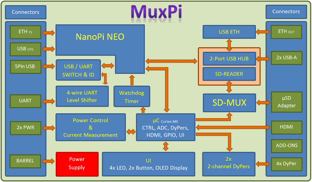
muxPi setup
NanoPi NEO
Preparation of the muxPi's "heart":
- Prepare microSD card (minimum 8GB) for NanoPi NEO operating system.
- Download and extract image - link
- Flash image into microSD card (Etcher tool could be helpful)
- Insert card to NanoPi microSD slot.
- Attach NanoPi to muxPi connectors.
- Plug Ethernet cable to RJ45 NanoPi port.
Serial communication
There are two methods to setup serial communication with muxPi:
- with microUSB<->USB cable

- with UART/USB converter
Attach USB/UART converter to muxPi's left addon female header (GND, DBG UART
RX, DBG UART TX on pinout image below):
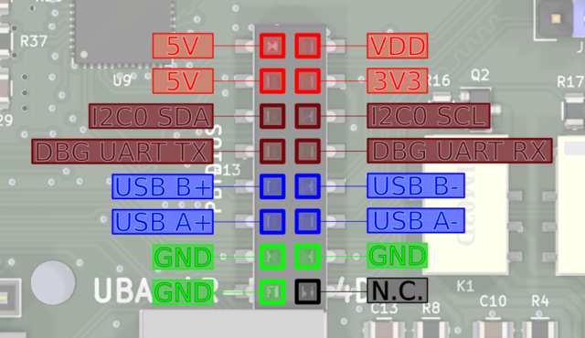
and plug USB connector to the computer. Next, open connection in PC terminal by
typing: sudo minicom -D /dev/ttyUSB0 -o -b 115200.
/dev/ttyUSB0is example device - check whetherUSB0is the correct one
Jumpers configuration
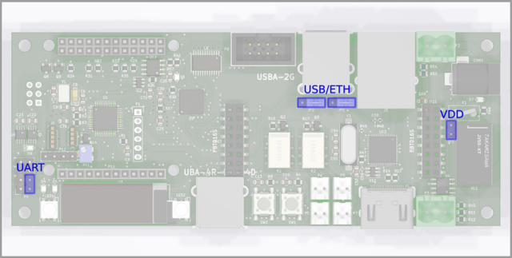
- UART - pins
Vloc&VCC- if jumped then internal voltage generator is used as voltage reference for data lines and powers up target device. If open then voltage reference for data lines comes from target device and internal voltage generator is unused. - USB/ETH - determines what USB data lines of one USB HUB are connected to. If first two pins are jumped then USB lines are connected to add-on connector. If last two pins are jumped then these lines are connected tu USB<->ETH converter. If none of the pins are jumped then the only connection is the upper socket of double connector.
NOTE: The upper socket of double USB-A connector must be left empty if USB<->ETH is selected or add-on connector is selected and something is connected to these data lines on the addon!
NOTE: Both jumpers must be placed in the same position!
- VDD - if this pins are jumped then the VDD and 3V3 are always on. If this is left open then VDD and 3V3 are controlled by NanoPi. The usage example is setting value of USB ID potentiometer (which is located underneath NanoPi). But when NanoPi NEO is removed there is no way to turn on power for microcontroller (that is when VDD jumper is helpful).
NOTE: If there is no particular need then leave this jumper open.
Power supply
To power on MuxPi with NanoPi attached, plug the 5V/2A DC 5.5/2.1mm power supply jack to the CON1 muxPi's connector. Power consumption of MuxPi should be less then 1A assuming no addons connected.
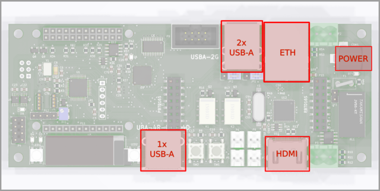
IP address
To check which IP address has been assigned, type in terminal: ifconfig.
OPTIONAL STEP: To set static IP, create following file:
sudo vi /etc/NetworkManager/NetworkManager.conf
Edit NetworkManger.conf and set the value of "managed" under "ifupdown" to false:
[ifupdown]
managed=false
Add network setting to /etc/network/interfaces:
sudo vi /etc/network/interfaces
Here is sample of /etc/network/interfaces:
# The loopback network interface
auto lo
iface lo inet loopback
# network interface not managed by Network Manager
allow-hotplug eth0
iface eth0 inet static
address 192.168.4.XXX
netmask 255.255.255.0
gateway 192.168.4.1
dns-nameservers 192.168.4.1
Restart the whole device:
reboot
Now you should be able to connect to device through ssh:
ssh root@192.168.4.XXX
with the password: fa
Install WiringNP
Connect to NanoPi NEO through ssh (serial connection automatically login to non
root user pi), then type:
git clone https://github.com/friendlyarm/WiringNP
cd WiringNP/
chmod 755 build
./build
Verify installation:
gpio readall
If your installation is successful the following messages will show up:
+-----+-----+----------+------+---+-NanoPi-NEO--+------+----------+-----+-----+
| BCM | wPi | Name | Mode | V | Physical | V | Mode | Name | wPi | BCM |
+-----+-----+----------+------+---+----++----+---+------+----------+-----+-----+
| | | 3.3V | | | 1 || 2 | | | 5V | | |
| 12 | 8 | GPIOA12 | ALT5 | 0 | 3 || 4 | | | 5V | | |
| 11 | 9 | GPIOA11 | ALT5 | 0 | 5 || 6 | | | 0v | | |
| 203 | 7 | GPIOG11 | OFF | 0 | 7 || 8 | 0 | ALT5 | GPIOG6 | 15 | 198 |
| | | 0v | | | 9 || 10 | 0 | ALT5 | GPIOG7 | 16 | 199 |
| 0 | 0 | GPIOA0 | ALT5 | 0 | 11 || 12 | 0 | OUT | GPIOA6 | 1 | 6 |
| 2 | 2 | GPIOA2 | OFF | 0 | 13 || 14 | | | 0v | | |
| 3 | 3 | GPIOA3 | OFF | 0 | 15 || 16 | 0 | OFF | GPIOG8 | 4 | 200 |
| | | 3.3v | | | 17 || 18 | 0 | OFF | GPIOG9 | 5 | 201 |
| 64 | 12 | GPIOC0 | ALT4 | 0 | 19 || 20 | | | 0v | | |
| 65 | 13 | GPIOC1 | ALT4 | 0 | 21 || 22 | 0 | ALT5 | GPIOA1 | 6 | 1 |
| 66 | 14 | GPIOC2 | ALT4 | 0 | 23 || 24 | 1 | OUT | GPIOC3 | 10 | 67 |
+-----+-----+----------+------+---+----++----+---+------+----------+-----+-----+
| BCM | wPi | Name | Mode | V | Physical | V | Mode | Name | wPi | BCM |
+-----+-----+----------+------+---+-NanoPi-NEO--+------+----------+-----+-----+
+-----+----NanoPi-NEO USB/Audio-+----+
| BCM | wPi | Name | Mode | V | Ph |
+-----+-----+----------+------+---+----+
| | | 5V | | | 25 |
| | | USB-DP1 | | | 26 |
| | | USB-DM1 | | | 27 |
| | | USB-DP2 | | | 28 |
| | | USB-DM2 | | | 29 |
| | | IR-RX | | | 30 |
| 17 | 19 | GPIOA17 | OFF | 0 | 31 |
| | | PCM/I2C | | | 32 |
| | | PCM/I2C | | | 33 |
| | | PCM/I2C | | | 34 |
| | | PCM/I2C | | | 35 |
| | | 0V | | | 36 |
+-----+-----+----------+------+---+----+
+-----+----NanoPi-NEO Debug UART-+----+
| BCM | wPi | Name | Mode | V | Ph |
+-----+-----+----------+------+---+----+
| 4 | 17 | GPIOA4 | ALT5 | 0 | 37 |
| 5 | 18 | GPIOA5 | ALT5 | 0 | 38 |
+-----+-----+----------+------+---+----+
Cortex-M0 flashing
The second controllable unit on the muxPi board is embedded microcontroller
STM32 F030C6T6 from Cortex-M0 family. It is required to flash special binary
prepared by Tizen group (the code is not open yet, but this process is in
progress). To flash muxPi's microcontroller, follow steps below:
- Make sure that
VDDjumper is left open. - Download binary file - link
- Copy binary to nanoPi:
scp <path-to-file> root@192.168.4.XXX:/root/ - Update package lists (nanoPi):
apt-get update - Install stm32flash utility (nanoPi):
sudo apt-get install stm32flash - Export GPIO:
gpio mode 3 outandgpio mode 7 out - Set Cortex-M0 to "Flashing mode":
gpio write 7 1 - Power up microcontroller:
gpio write 3 1 - Flash firmware:
stm32flash -w firmware-05.bin -v -g 0x0 /dev/ttyS2 - Power off microcontroller:
gpio write 3 0 - Set Cortex-M0 to "Execution mode":
gpio write 7 0 - Power on microcontroller:
gpio write 3 1
From now on, muxPi's LCD should light on and display:
* MuxPi *
HW: 1.0 SW: 0.5
Software installation
NOTE: It is recommended to cross-compile muxPi's software on your host machine
Building using docker
Prerequisites: Docker, Make.
- Clone repository:
git clone https://github.com/SamsungSLAV/muxpi.git. - Change directory:
cd muxpi/sw/nanopi. - Build muxPi software:
make docker-build
Resulting binaries will be in bin directory.
Building from source
Prerequisites: git, go (1.10+)
- Go get it:
go get github.com/SamsungSLAV/muxpi - Change directory:
cd $GOPATH/src/github.com/SamsungSLAV/muxpi/sw/nanopi - Download dependencies:
go get ./... - Build binaries:
mkdir -p bin
GOARCH=arm GOOARM=7 GOOS=linux go build -o bin/stm ./cmd/stm/
GOARCH=arm GOOARM=7 GOOS=linux go build -o bin/fota ./cmd/fota/
Install muxpi-power
muxpi-power - tool for controling power supply for MuxPi's main board.
-
Copy muxpi-power files (change
XXXto proper values):scp power/muxpi-power root@192.168.4.XXX:/usr/bin scp power/systemd/muxpi-power.service root@192.168.4.XXX:/etc/systemd/system -
On your MuxPi device, enable and start muxpi-power service:
systemctl enable muxpi-power.service systemctl start muxpi-power.service
Install stm
stm - tools/libs for communicating with STM32F030 microcontroller.
-
Copy stm binary and systemd files (change
XXXto proper values):scp bin/stm_armv7 root@192.168.4.XXX:/usr/bin/stm scp stm/systemd/stm.service root@192.168.4.XXX:/etc/systemd/system scp stm/systemd/stm-user.socket root@192.168.4.XXX:/etc/systemd/system scp stm/systemd/stm.socket root@192.168.4.XXX:/etc/systemd/system scp stm/stm root@192.168.4.XXX:/usr/local/bin/stm -
On your MuxPi device - create group stm and add your user:
groupadd stm usermod -aG stm root -
On your MuxPi device - enable stm sockets:
systemctl daemon-reload systemctl enable stm.socket stm-user.socket systemctl start stm.socket stm-user.socket
Install fota
fota - tools/libs for flashing devices - usually microSD card.
-
Copy fota binary to MuxPi device (change
XXXto proper values):scp bin/fota_armv7 root@192.168.4.XXX:/usr/bin/fota -
On your MuxPi device - create a symlink from
/usr/local/bin/fotato/usr/bin/fota/. Only/usr/local/bin/fota/should be used by software interfacing with MuxPi. This allows to swap fota implementation to your preferred tool:ln -s /usr/bin/fota /usr/local/bin/fota
DUT setup
DUT power supply
MuxPi is capable of:
- power switching on/off
- current measurement
Power switching - it can switch power supply up to 5A and 250VAC. One line is connected directly and one is connected through relay.
Current measurement - It is able to measure up to -/+5A and is galvanically isolated from the rest of components thanks to use of Hall effect current sensor ACS712ELCTR-05B-T. It is connected to unswitchable power line. The current sensor is bypassed with 3 0R resistors tha can be populated if current sensor is not needed. These resistors must not be populated if current measurement is required.
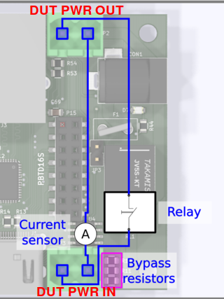
UART connections
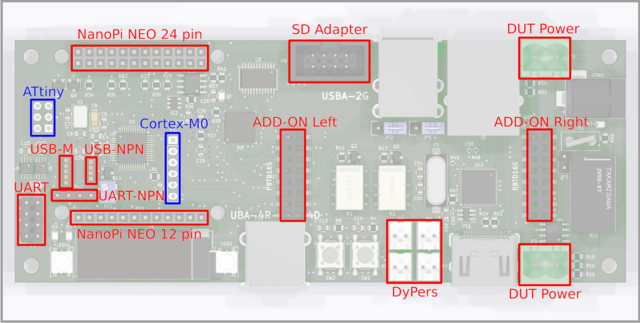
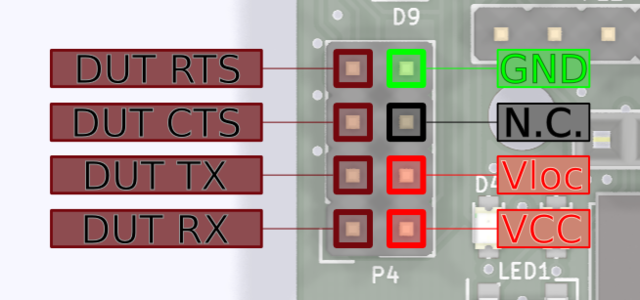
GND- digital ground of MuxPi boardN.C.- not connectedVloc- local voltage - voltage may be generated internally on MuxPi if the DUT, or anything else we are connecting to, has not power pin. Nn such case voltage generator must be set to desired value and activated. Command "uart 3300" must be sent to Cortex-M0, where 3300 is desired voltage given in millivolts. The voltage range is from 0 to 5000mv. PinsVlocanVCCmust be connected eachother. Typical jumper is a perfect connector for this purpose.Vlocmay be also used to power up additional converter RS232C. For example if converter to RS232C (+/-12v) must be used then it may be powered fromVlocpin.VCC- power of DUT. If dut has no such power pin then it must be connected to Vloc and vloc must be configured properly as stated above.DUT RX- receiver data line in the DUT - through this line MuxPi sends data to the DUTDUT TX- transmitter data line in the DUT - from this line MuxPi reads data form the DUTDUT CTS- Clear To Send - hardware handshakeDUT RTS- Ready To Send - hardware handshake
Example configuration for OrangePi (DUT) uart connection:
- Set 3.3V Vloc (/dev/ttyS2 terminal):
uart 3300 - Attach UART jumper (
VlocandVcc). - Connect GND, RX and TX (without crossing).
- Open connection:
screen /dev/ttyS1 115200,cs8,ixon,ixoff
NOTE:
RX,TX,XTS,RTSare crossed on the board so you don't need to cross the wires by yourself.NOTE: A device powered from
Vlocmustn't draw more than 50mA of current.
Add-ons
Add-ons headers are extensions for attaching new shields or simply using NanoPi and CortexM0 interfaces:
5V- power supply - not switchable - always present3V3- switchable (controlled by NanoPi) 3.3V power supplyI2C0 SDA- I2C0 SDA line connected to NanoPiI2C0 SCL- I2C0 SCL line connected to NanoPiDBG UART TX- UART0 (debug) of NanoPiDBG UART RX- UART0 (debug) of NanoPiUSB B+/-,USB A+/-USB host lines connected to NanoPi through USB HUBGND- ground linesN.C. - not connected
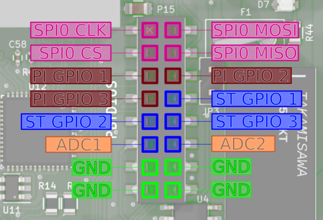
SPI0 CLK- SPI0 clock line connected to NanoPiSPI0 MOSI- SPI0 "master output slave input" line connected to NanoPiSPI0 CS- SPI0 "chip select" line connected to NanoPiSPI0 MISO- SPI0 "master input slave output" line connected to NanoPiPI GPIO 1,2,3- GPIO (General Purpose Input/Output) connected to NanoPi NEO. Ports PG11, PL11, PA17 respectively.ST GPIO 1,2,3- GPIO connected to Cortex-M0 microcontroller. Ports PB3, PB4, PB5 of STM32F03C6T6 respectively.ADC1,2- analog inputs connected to analog to digital converter of Cortex-M0 microcontroller. Ports PA1, PA2 respectively. Voltage range of this input is 0 to 3.3V. This lines are not buffered in any way so attention must paid when dealing with them.GND- ground lines
NOTE: PI GPIO 1 has additional special function. It is connected to Cortex-M0 Boot0 pin which enables firmware download mode during microcontroller boot. 1 - enables this mode while 0 disables it. So it is useless as GPIO when the microcontroller is being booted.
DyPers
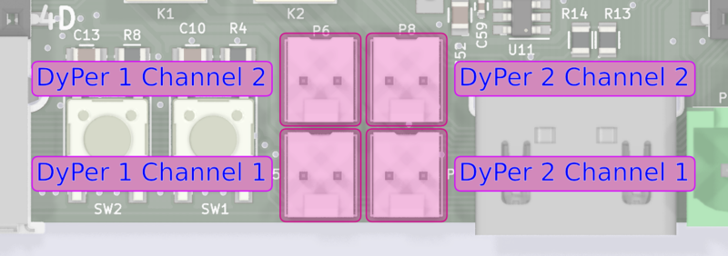
Dyper is a small, electromagnetic relay which is controllable by software. There are 2 dypers on MuxPi board. Each of them has two channels. Both channels are switched at the same time with the same command. So both of them can be on and both can be off but there is no way to turn one on and one off. They can be controlled by CortexM0 - examples here.
ETH and USB
ETH and upper USB of double USB socket share the same USB channel from USB HUB. Jumpers located at the rear side of double USB connector allow to disconnect this USB from ETH and connect to add-on connector. Details on this topic are covered in jumpers section.
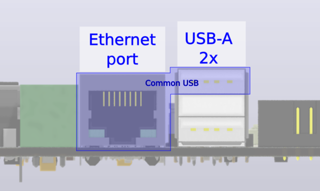
USB-M
This is USB connector dedicated to mobile devices from Samsung company. This connector has controllable Vbus line and also controllable ID line.
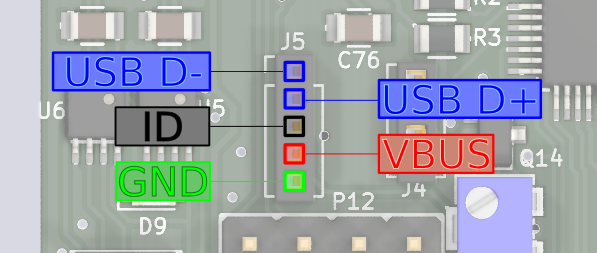
More information about this type of interface, it's capabilities and example of flashing smartphone can be found here.
SD Adapter
This connector is used to connect microSD card, put into MuxPi, to a DUT.
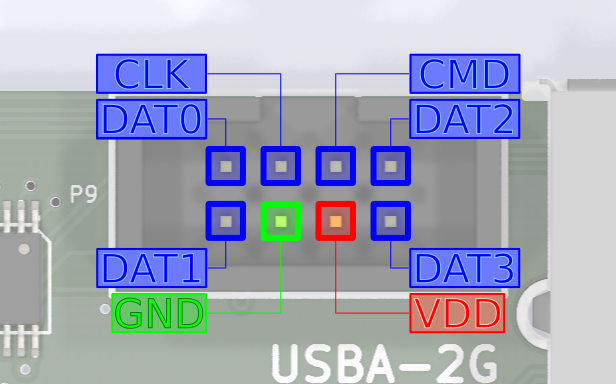
This connector requires IDC-uSD cable adapter:
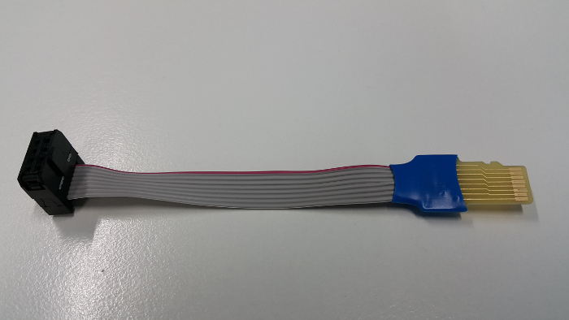
Target microSD card must be attached to microSD card reader accessible on bottom side of muxPi board.
To enable microSD card reader, connect to Cortex from MuxPi via minicom:
minicom -D /dev/ttyS2
and enter in minicom following commands:
ts
and then
dut
Each command should return OK
After doing this you can connect the uSD's end of the cable adapter to the external card reader and check if it is correctly recognized by PC. You should also be able to run the microcontroller from the card attached to MuxPi if the card contains appropriate OS.
Interacting with muxPi
Connection with NanoPi
User can simply open SSH connection by (password: fa):
ssh root@<muxpi-ip-address>
- or use serial connection mentioned here
NOTE: Connecting with MuxPi through serial will automatically login as non root user
piwith passwordpi.
User interface
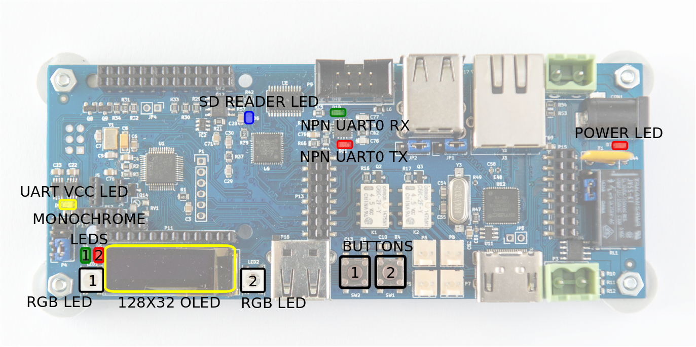
Features operable directly via NanoPi GPIOs:
| #Pin (board) | #WiringNP | Description | Low state "0" | High state "1" |
|---|---|---|---|---|
| 12 | 1 | LED1 | LED off | LED on |
| 13 | 2 | LED2 | LED off | LED on |
| 15 | 3 | Power (Cortex m0) | Power off | Power on |
| 7 | 7 | Boot (Cortex m0) | Execution mode | Flashing mode |
NOTE: Initially, above GPIOs are not exported. Set GPIOs mode with
gpio mode <#WiringNP> out.
Example LED1 control:
- LED1 on:
gpio write 1 1 - LED1 off:
gpio write 1 0
Example of flashing Cortex-M0 is described here.
The microcontroller is connected to NanoPi NEO with UART. This UART is connected to third UART of NanoPi - /dev/ttyS2. The port is configured to 115200,8,N1 and cannot be changed without modification of the firmware. The protocol is text based, simple and human readable. Each command has to be ended with 'n' or 'r' character. Each command is confirmed with 'OK' string or error string.
It is recommended to use screen program for communication:
- Install screen:
sudo apt-get install screen - Open connection (from muxPi):
screen /dev/ttyS2 115200,cs8,ixon,ixoff - Write
helpand pressEnter.
Features operable through Cortex-M0 microcontroller (help output):
help --- This help
version --- Display version of the firmware
echo --- Get (no arguments) or set ('on' or 'off') echo on serial "console": echo [on|off]. The default value is on.
power --- Get (no arguments) or set ('on' or 'off') or switch off and on ('tick') power supply for DUT: power [on|off|tick]
hdmi --- Get (no arguments) or set ('on' or 'off') HDMI HOTPLUG pin: hdmi [on|off]
dyper --- Get (no second argument) or set ('on' or 'off') DyPer state: dyper 1|2 [on|off]
mux --- Connect microSD card to external connector (DUT) or card reader (ts): mux [dut|ts]
dut --- Connect microSD card and power to DUT: dut
ts --- Connect microSD card and power to TS: ts
led --- Get (no second or third argument) or set ('R G B') color of led (1 | 2), ex: led 1 255 0 255
clr --- Clear oled display
text --- Print text on the OLED display: text x y color content
draw --- Draw an object on the OLED display: draw object x1 y1 [x2 y2], objects are:
- point x y color - draws one point at given coordinates
- line x1 y1 x2 y2 color - draws line between given coordinates
- rectangle left top width height color - draws line between given coordinates
- circle x y radius color - draws line between given coordinates
color must be 'on', 'off' or 'inv'
adc --- Print current adc value of all (if no arguments are given) or one specified channel, ex: adc 1
voltage --- Print current voltage [mV] of all (if no arguments are given) or one specified channel, ex: voltage 1
current --- Print current current [mA] being consumed by DUT
lthor --- Get (no second argument) or set state of lthor control signals:
- lthor switch [usb|uart] - redirect DUT's USB wires to NanoPi's 'usb' or 'uart'
- lthor id [usb|uart] - switch DUT's USB to 'usb' or 'uart' mode
- lthor vbus [on|off] - switch DUT's VBUS 'on' or 'off'
- lthor combo [usb|uart] - make DUT and MuxPi USB work in 'usb' or 'uart' mode - no get function
key --- Get current state of given key or both if no key number is given: key [1|2]
uart --- Get current value of UART voltage or set if new value is given [in millivolts]
Images source: Wiki Tizen